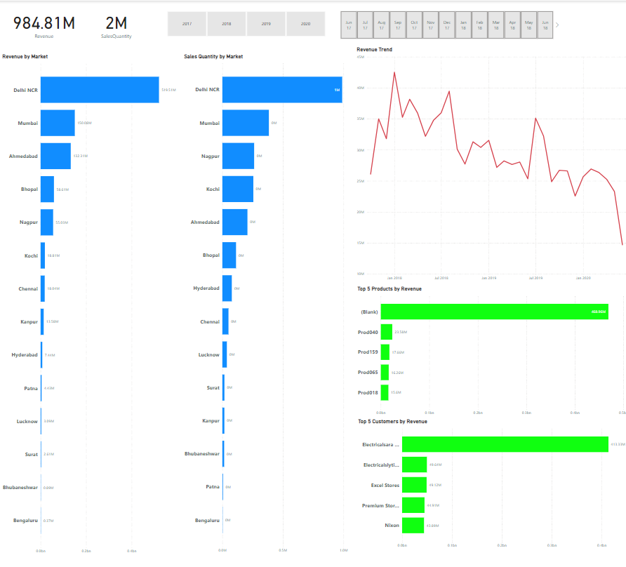
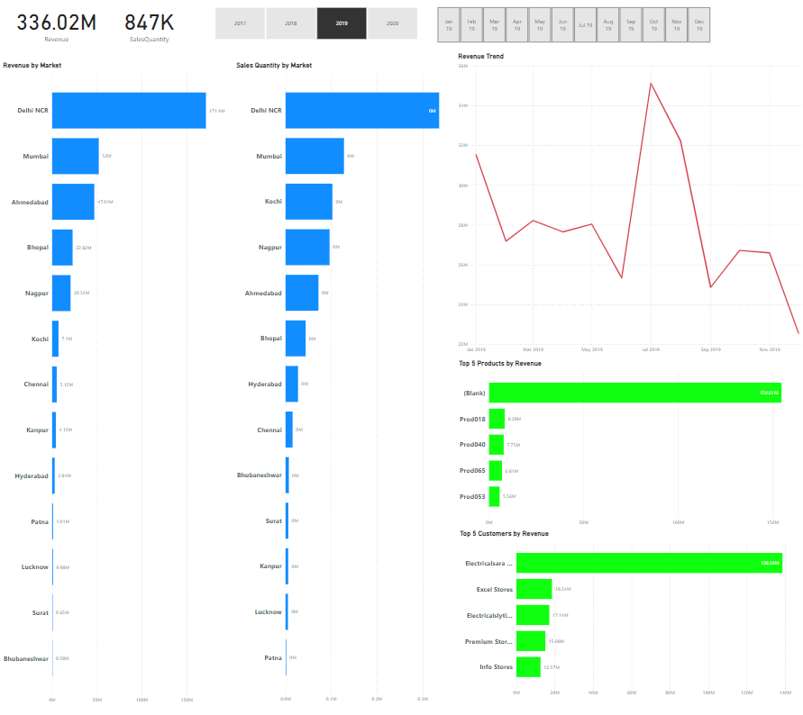
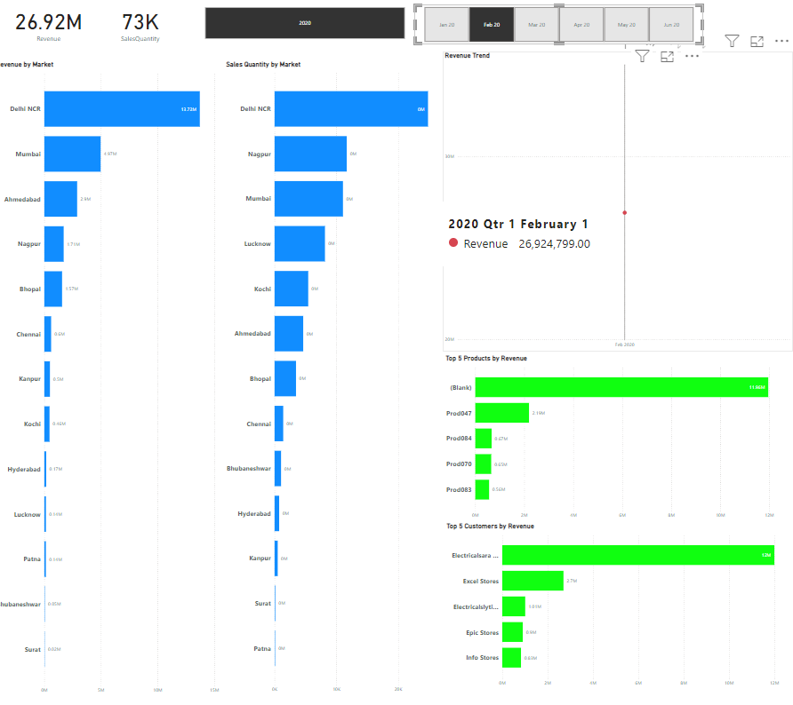
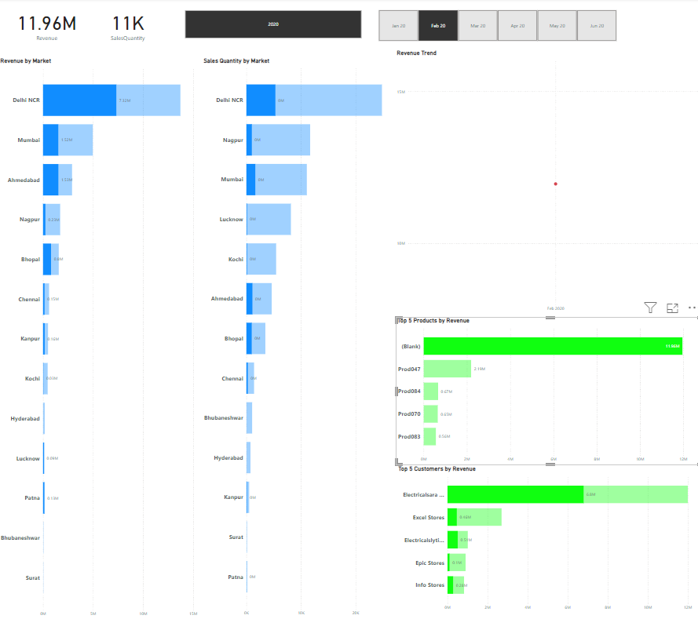

Project 1 - Sales Insights - MySQL and Power Bi
Overview: Developing Sales Insights for a Consumer Goods Company Based out of India using SQL and Power BI.Problem: AltiQ Hardware is facing challenges in effectively tracking sales and obtaining key business insights. The company's Sales Director, Bob, currently relies on verbal communication with regional managers in the North, South, and Central regions of India to gather critical information. For instance, Bob may need details on last quarter’s sales performance or projections for growth in the next quarter. However, these discussions are informal, with no concrete data to support the insights being shared.
Bob has recently observed a decline in sales and realizes that he needs reliable, evidence-based information to address the issue. In response, he requests the regional managers to send him their sales data, and they submit multiple Excel files with thousands of rows of data. Unfortunately, Bob struggles to make sense of this overwhelming data, preventing him from understanding the current state of the business or identifying effective solutions for improving sales performance.
To address this, Bob has asked us to create a comprehensive dashboard that consolidates all relevant sales data, providing clear visualizations for better decision-making. This dashboard needs to present annual revenue, sales quantity, revenue by market, sales quantity by market, Revenue trend, top five products and top 5 customers by revenue, and lastly you should be able to filter all of these charts by year and month. Additionally, Bob wants automated monthly email reminders to receive timely updates on business performance and insights.
Purpose:To unlock sales insights that are not visible before sales team for decision support and automate theme to reduced manual time spent in data gathering.
Success Criteria:Dashboard(s) uncovering sales order insights with the latest data available to make accurate and informed Adjustments.
STEPS:
STEP 1: Link Power Bi to MySql Database. I did by running a data base cales Sales with 5 tables. These tables are called customers, date, markets, products, and transitions. To link Power Bi to Mysql I just needed to sign in to my localhost using root and my password
STEP 2: Data cleaning - to do this I transformed the data. I removed unnecessary values such as sale amount being <=0, removed any sales that were in markets outside of India, and lastly created a new column to convert all USD currencys to INR currency in a new column called normalized_sales_amount. To do this last transformation I used a conditional column that said {"normalized_sales_amount", each if [currency] = "USD" or [currency] = "USD#(cr)" then[sales_amount]*75 else [sales_amount])}
STEP 3: Data Visualization - to create this dashboard I created a new table called buisMeasures. This table was used to calculate the revenue, by creating a new measurement for revenue by using this formula : "Revenue = SUM('sales transactions'[sales_amount])", then I created another measurement to caluclate Sales Quantity and this was done using this formula : "SalesQuantity = SUM('sales transactions'[sales_qty])". Once these measurements were created I I connected both of these two their own cards to present revenue and sales quantity. Then I four horizontal bar graphs, to show Revenue by Market, sales Quanity by market, top 5 products by revenue, and top 5 customers by revenue. The last chart I used was a line chart to display revenue over time aka revenue trend. The Last requirement was to make this dashboard conditional by month and year to see the specifics by year and/or month. To do this I created 2 sliders, one for year and one for month, and I changed the style of the slider to title to make it look nicer.
Pictures of Dashboard

Defult Dashboard view. Shows totals from 2017-2020

Dashboard of 2019

Dashboard of Febuary 2020

Dashboard of Febuary 2020 where we have also selected the product "Blank" this "Blank issue is also an issue in our data. It shows where the data entered is missing the product name.